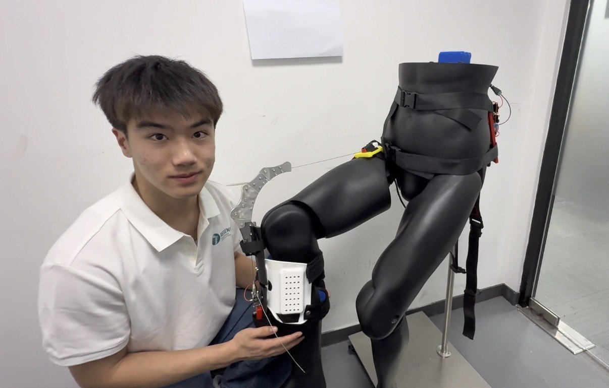
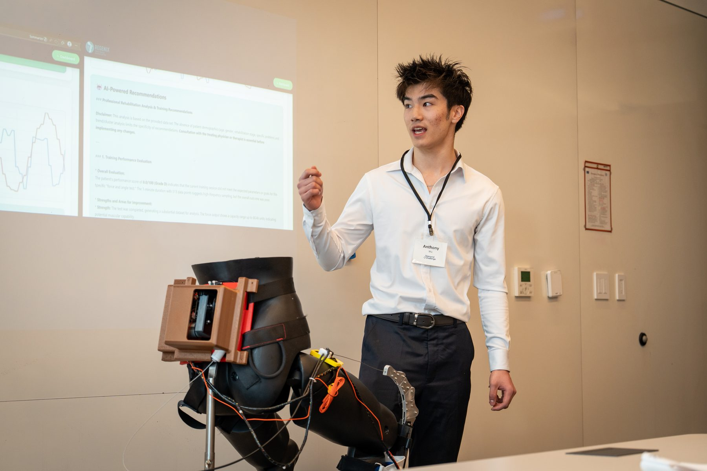
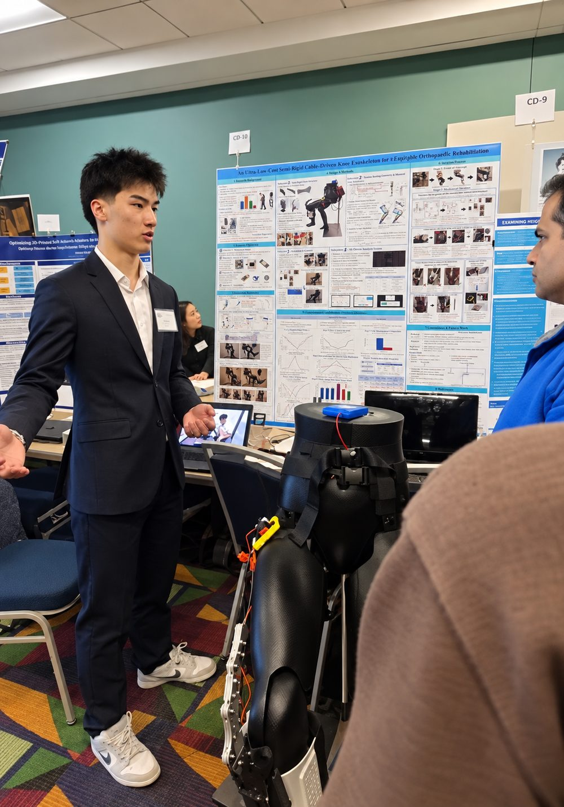
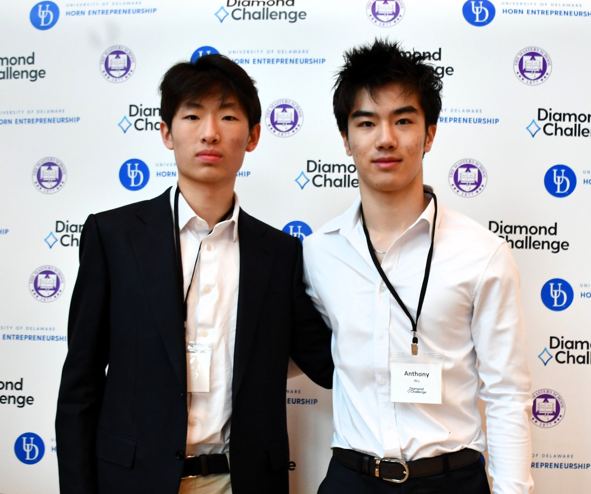
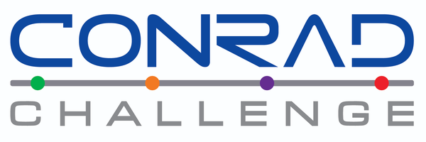

An ultra-low-cost semi-rigid knee exoskeleton

Regenix — A Low-Cost Knee Rehabilitation Exoskeleton
Regenix addresses the lack of affordable knee rehabilitation in low- and middle-income settings, where supervised physiotherapy is out of reach and robotic exoskeletons cost USD 7,000–100,000. It is an ultra-low-cost, semi-rigid, cable-driven knee exoskeleton with a bill of materials under USD 200, combining a self-adaptive five-link chain with a distributed load-anchoring system. Its hardware includes an ESP32 microcontroller, dual IMUs, a cable-driven actuator, and 3D-printed parts, weighing under 2 kg. The controller runs four rehabilitation modes across 0°–145° of motion and delivers at least 10 N·m of assistive torque. Mannequin testing showed ≤1° inter-trial leg-angle deviation, and a kinematic model predicts 1.39 mm mean joint misalignment. An on-device analytics framework combining K-Means clustering, trend analysis, and LLM recommendations reached 94% agreement with licensed clinicians. As the first sub-USD-200 knee exoskeleton with integrated on-device AI, Regenix enables at-home rehabilitation in settings without physiotherapists.
Regenix Project Video
Business & Commercialization
I worked with my friend Leo Xie to develop Regenix’s business model, conducting market research, competitor analysis, and customer segmentation. We built financial projections targeting a $250 retail price, analyzed manufacturing costs, and explored subscription-based revenue models. I researched FDA medical-device regulations, outlining a potential Class II 510(k) clearance pathway, clinical validation requirements, and international regulatory considerations. We also analyzed healthcare reimbursement policies, insurance coverage, and socioeconomic barriers to rehabilitation access, integrating these findings into our commercialization and market-entry strategy.



Publication
Awards
Semi-finalist
Diamond Challenge
2nd Place · Region V
Massachusetts Science & Engineering Fair

Innovator Award
Conrad Challenge
Xerox Award for Innovation & Information Technology
University of Rochester